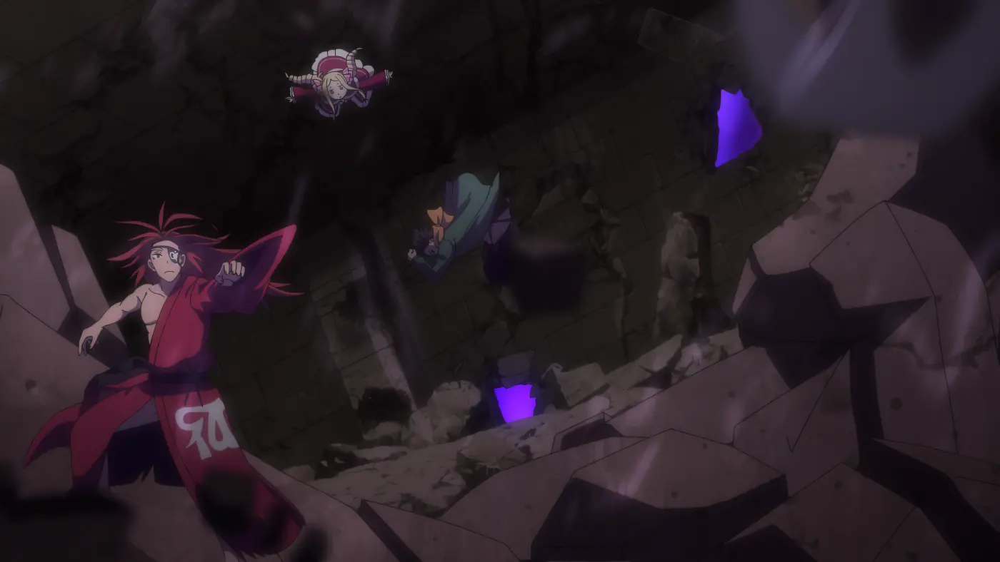
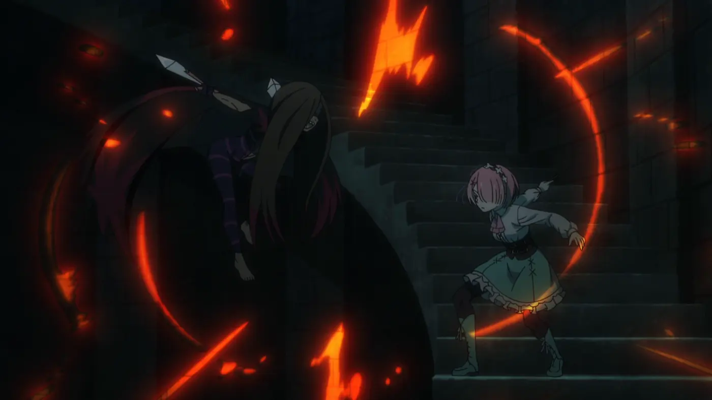

Character 03
Reid
The friend who keeps standing
He shows up sideways: a hand reaching out, a name said once and never repeated, a person who turns up at exactly the wrong moment and somehow makes it the right one.
All characters

Write this part
This is the Reid page and the writing is yours to finish. The photo, the layout, the colours and the scroll behaviour are all already in place, exactly like the Subaru page.
Drop your text into these paragraphs: who he is, how he ends up beside Emilia, what he does in season four, and why you keep coming back to him.

And this part
Add a second section here: an image on the left, a couple of paragraphs on the right, and a line or two that sets up the rest of the arc.